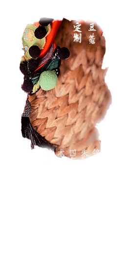

专属豆蔻孩童的高端定制礼服

考古发现距今七八千年前的裴李岗文化遗址、陕西临潼白家村遗址中都发现骨针、纺轮，说明当时人们已会纺布制衣。到了约五千年前的仰韶文化时期，不但大量发现纺轮，还在陶器上发现大量布纹的印痕。同时期的遗址中还发现了苎麻、蚕茧。说明此时已经产生了原始的农业和纺织业，用苎麻织成的麻布和饲蚕得到的丝纺来做衣服。只是在考古发掘中未发现此时期的实物。商朝出土玉人这一时期的服装继承了上古时期的特征，并且已有充分的实物可证实汉服的基本特征已在此时确定：交领、右衽、系带为最基本的典型特征，上衣下裳是最基本的式样。在甲骨文、金文的多种字形中，很常见的一种字形的“衣”字即为交领右衽上衣的形象。河南安阳殷墟出土的玉人亦穿着此种特点的服装，该玉人是中国出土的最早、最完整的服饰造型。与交领、右衽、系带的上衣相配的下装是“裳”。上衣下裳是汉服最基本的式样，汉语仍然用“衣裳”这两个字作为服装的统称。